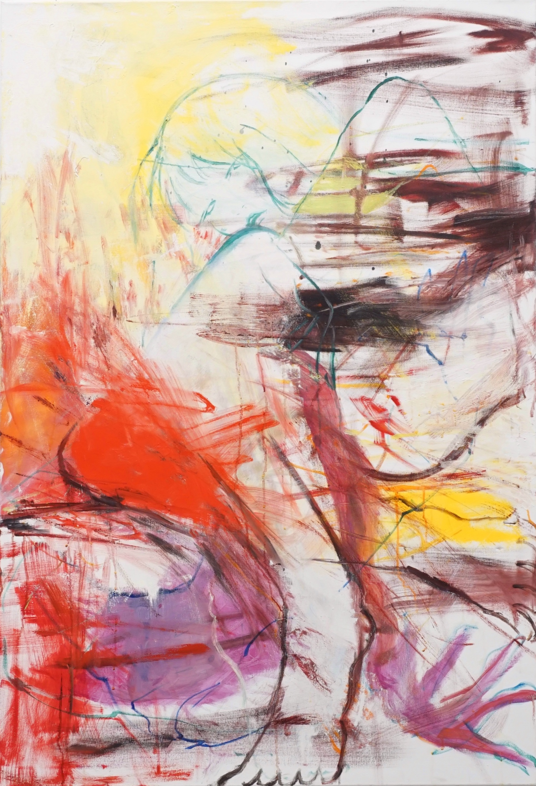

16. Ausgabe - November 2026 / 16th Issue - November 2026
---
staring into the mirror questioning about ourself emotional brush throwing into a picture upside down the canvas drop it crush it a realization comes embracing the mess that what we are following the strokes that we never arrive expanding colors we are demolished a newness the unprecedented dominance

***
New
Who crashed against a thing like a crow
Have you seen anything that is not a tame crow
Your man raised the curtain on light
An ocean or a mirror or a hive
Mirror Mirror of nature completed
The question is raised, and what haven’t you said
Now that the Albion, the myth of this land has fallen into place and no one is to wonder from Eden into the lowland, and now that a frame and man have sung the same tune in the nicks of the wind, it is the time for a question which never closes, as if it were the very first before a word in new creation, sweet eroteme
---
Back to homepage